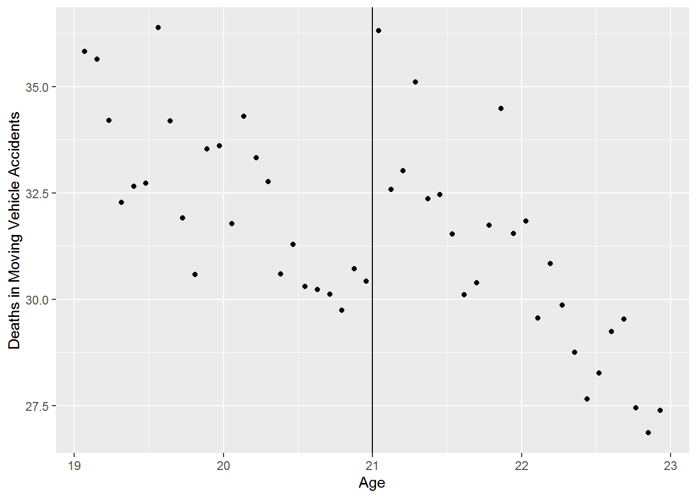
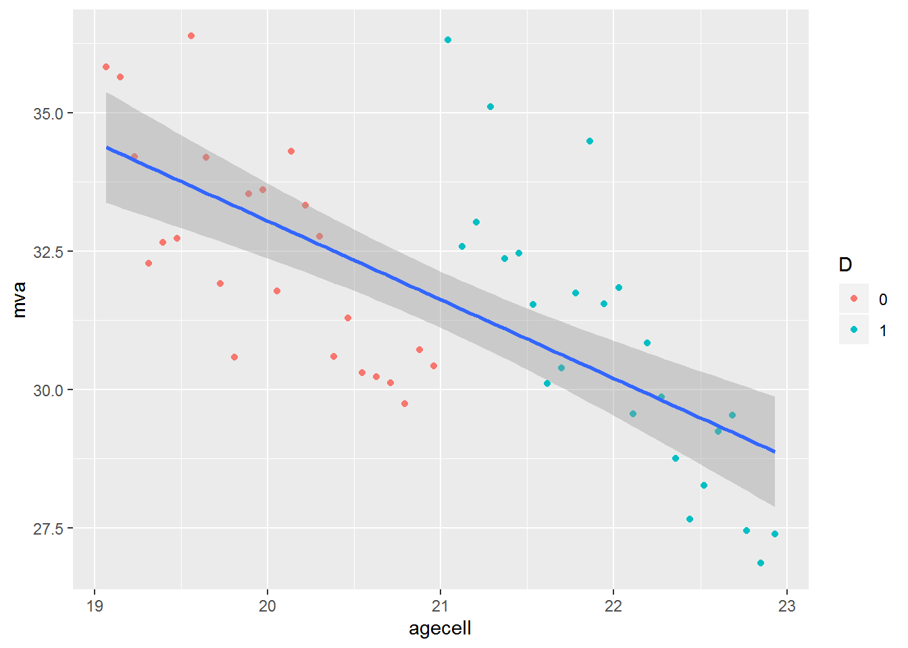
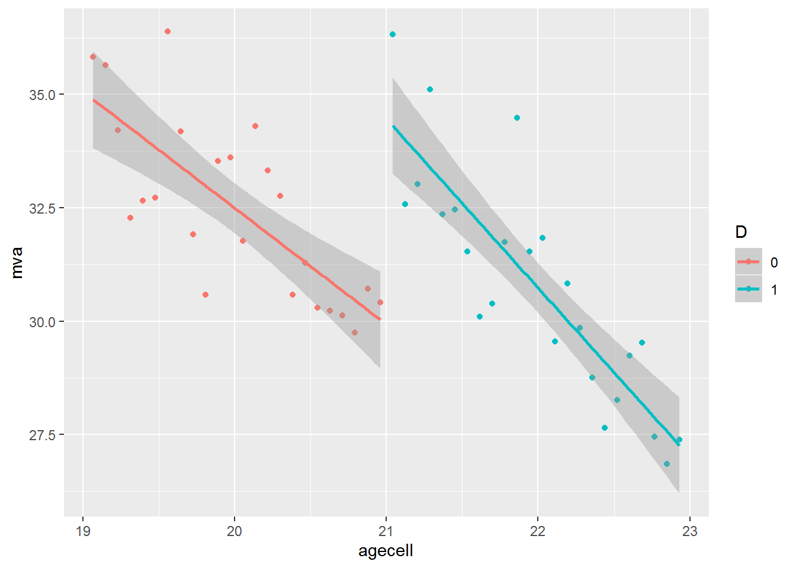

Chapter 13 Regression Discontinuity: Looking for Jumps in Data
We will learn techniques in R to deal with “jumps” in the data. We will use the following libraries
13.1 Same slope
To estimate an RD model where the slope is the same before and after the cutoff value make use of the ifelse call in R. ifelse returns one value if the test condition holds and another when it doesn’t. For example suppose the we create a variable, T that takes on the value 1 when another variable say X is greater than 10. Create T with the call T -> ifelse(X > 10, 1, 0)15.
Let’s estimate an RD model using the data from a 2009 paper by Carpenter and Dobkin about the effect of increasing the drinking age on mortality rates.16. Let’s just look at motor vehicle deaths as a function of age.
load("Data/mlda.rda")
mlda %>%
ggplot(aes(x = agecell, y = mva)) +
geom_point() +
geom_vline(xintercept = 21) +
labs(y = "Deaths in Moving Vehicle Accidents", x = "Age")
There appears to be a discontinuity at age 21. Let’s estimate the RD model \[mva = \beta_0+\beta_1T+\beta_2(agecell-21)+\epsilon\]
where
\[T = 1 \text{ if agecell}\ge21\] \[T = 0 \text{ if agecell}\lt21\]
We will make use of the tidyverse verb mutate and pipe operators from the magrittr package to create D17.
Call:
lm(formula = mva ~ D + I(agecell - 21))
Residuals:
Min 1Q Median 3Q Max
-2.532 -0.849 -0.180 0.758 3.309
Coefficients:
Estimate Std. Error t value Pr(>|t|)
(Intercept) 29.356 0.429 68.39 < 0.0000000000000002 ***
D 4.534 0.768 5.90 0.0000004338310 ***
I(agecell - 21) -3.149 0.337 -9.34 0.0000000000043 ***
---
Signif. codes: 0 '***' 0.001 '**' 0.01 '*' 0.05 '.' 0.1 ' ' 1
Residual standard error: 1.33 on 45 degrees of freedom
(2 observations deleted due to missingness)
Multiple R-squared: 0.703, Adjusted R-squared: 0.689
F-statistic: 53.1 on 2 and 45 DF, p-value: 0.0000000000014213.2 Varying Slopes
Let’s estimate the relationship described above with a varying slopes RD model. The model now has the form: \[mva = \beta_0+\beta_1T+\beta_2(agecell-21)+\beta_3(agecell-21)T+\epsilon\]
where
\[T = 1 \text{ if agecell}\ge21\] \[T = 0 \text{ if agecell}\lt21\]
Call:
lm(formula = mva ~ D * I(agecell - 21))
Residuals:
Min 1Q Median 3Q Max
-2.412 -0.777 -0.291 0.850 3.238
Coefficients:
Estimate Std. Error t value Pr(>|t|)
(Intercept) 29.929 0.531 56.39 < 0.0000000000000002 ***
D 4.534 0.751 6.04 0.00000029 ***
I(agecell - 21) -2.568 0.466 -5.51 0.00000177 ***
D:I(agecell - 21) -1.162 0.659 -1.76 0.085 .
---
Signif. codes: 0 '***' 0.001 '**' 0.01 '*' 0.05 '.' 0.1 ' ' 1
Residual standard error: 1.3 on 44 degrees of freedom
(2 observations deleted due to missingness)
Multiple R-squared: 0.722, Adjusted R-squared: 0.703
F-statistic: 38.1 on 3 and 44 DF, p-value: 0.0000000000026713.3 Plot RD Model
Use ggplot to plot the RD model. We include plots with an simple regression and an RD model.
mlda %>%
select(agecell, mva) %>%
mutate(D = as.factor(ifelse(agecell >= 21, 1, 0))) %>%
ggplot(aes(x = agecell, y = mva)) +
geom_point(aes(color = D)) +
geom_smooth(method = "lm")
mlda %>%
select(agecell, mva) %>%
mutate(D = as.factor(ifelse(agecell >= 21, 1, 0))) %>%
ggplot(aes(x = agecell, y = mva, color = D)) +
geom_point() +
geom_smooth(method = "lm")
13.4 rddtools package
We can estimate RD models with the rddtools package18. To estimate an RD model with rddtools first create an rdd_data object as follows: rdd_data(y = df$y, x = df$x, cutpoint = C). Use the rdd_data object with rdd_reg_lm to estimate the model.
13.4.1 Same slope
To estimate an RD model with a constant slope call the argument rdd_reg_lm(rdd_object, slope = "same")
library(rddtools)
rdd_data(mlda$mva, mlda$agecell, cutpoint = 21) %>%
rdd_reg_lm(slope = "same") %>%
summary()
Call:
lm(formula = y ~ ., data = dat_step1, weights = weights)
Residuals:
Min 1Q Median 3Q Max
-2.532 -0.849 -0.180 0.758 3.309
Coefficients:
Estimate Std. Error t value Pr(>|t|)
(Intercept) 29.356 0.429 68.39 < 0.0000000000000002 ***
D 4.534 0.768 5.90 0.0000004338310 ***
x -3.149 0.337 -9.34 0.0000000000043 ***
---
Signif. codes: 0 '***' 0.001 '**' 0.01 '*' 0.05 '.' 0.1 ' ' 1
Residual standard error: 1.33 on 45 degrees of freedom
(2 observations deleted due to missingness)
Multiple R-squared: 0.703, Adjusted R-squared: 0.689
F-statistic: 53.1 on 2 and 45 DF, p-value: 0.00000000000142Note the results are the same as above.
13.4.2 Varying Slopes
To estimate an RD model with varying slopes, change the slope argument to “separate”.
Call:
lm(formula = y ~ ., data = dat_step1, weights = weights)
Residuals:
Min 1Q Median 3Q Max
-2.412 -0.777 -0.291 0.850 3.238
Coefficients:
Estimate Std. Error t value Pr(>|t|)
(Intercept) 29.929 0.531 56.39 < 0.0000000000000002 ***
D 4.534 0.751 6.04 0.00000029 ***
x -2.568 0.466 -5.51 0.00000177 ***
x_right -1.162 0.659 -1.76 0.085 .
---
Signif. codes: 0 '***' 0.001 '**' 0.01 '*' 0.05 '.' 0.1 ' ' 1
Residual standard error: 1.3 on 44 degrees of freedom
(2 observations deleted due to missingness)
Multiple R-squared: 0.722, Adjusted R-squared: 0.703
F-statistic: 38.1 on 3 and 44 DF, p-value: 0.00000000000267Using T as variable name is not good practice as T is an abbreviation for TRUE, so we will use D throughout our code.↩
Carpenter, Christopher and Carlos Dobkin. “The Effects of Alcohol Consumption on Mortality: Regression Discontinuity from the Minimum Drinking Age,” American Economic Journal: Applied Econometrics, 2009, 1:1, 164-182.
The data are available at https://github.com/jrnold/masteringmetrics/tree/master/masteringmetrics/data in mlda.rda↩Recall we will use D to avoid the ambiguity of T as a variable name.↩
?rddtoolsfor more.↩